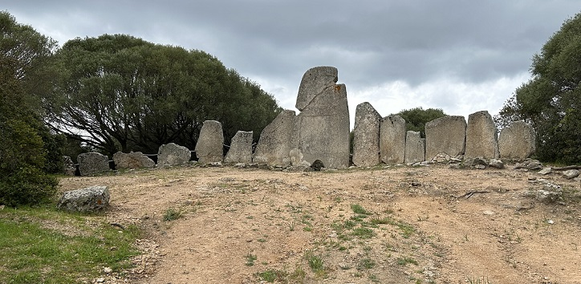
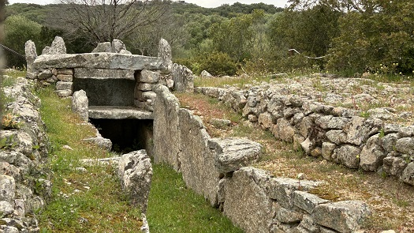
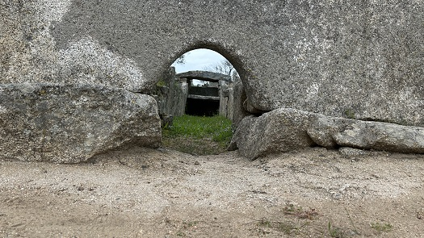
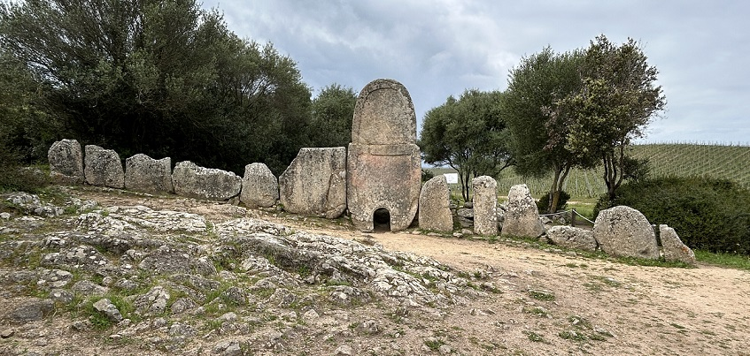
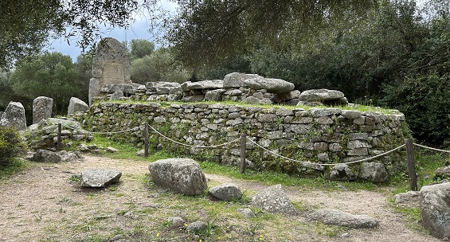

|
TUMBAS DE LOS GIGANTES
Las tumbas de gigantes tenían una
función funeraria, cultural y territorial.
Las tumbas de gigantes de la zona de Arzachena, son el resultado de dos
fases constructivas. La primera fase incluye un dolmen alargado, rodeado
por un recinto de piedra, que data de la Edad del Bronce Temprano
(alrededor de 1800-1600 a.e.c.), mientras que en la segunda fase,
atribuible a la Edad del Bronce Medio (alrededor de 1600-1400 a.e.c.),
se construyó el área ceremonial semicircular denominada “exedra” y el
largo corredor funerario .Nosotros visitamos dos, posiblemente las
tumbas colectivas de época nurágica más impresionantes y mejor
conservadas de Cerdeña.
La Tumba de los Gigantes de Li
Lolghi
Li Lolghi con sus 27m de longitud
total y su estela monolítica. La exedra está formada por una estela
central arqueada de 3,75m de altura y una serie de 14 losas, de granito,
dispuestas a los lados del gran monolito, con altura decreciente. La
decoración en relieve de la estela remite a la interpretación del
concepto de “puerta falsa” al más allá.
En buen estado de conservación, tanto el dolmen alargado como el
corredor funerario.
Lo característico de este sitio es la presencia de un “edículo ” de dos
pisos, que sirve de enlace entre la primera y la segunda fase. Este
elemento se creó colocando una losa de piedra de forma horizontal, cuya
supuesta función era albergar ofrendas dedicadas a los difuntos. Se han
hallado fragmentos de cerámica, que parecen ser recipientes para comida
y bebida.

|
 |
 |
| |
|
La Tumba de los Gigantes de Coddu
Vecchiu
Coddu Vecchiu tiene la estela
arqueada más alta de Cerdeña, con sus 4m.
La fachada semicircular, realizada con losas de piedra ortostáticas, es
decir, fijadas al terreno y su altura va disminuyendo hacia los
extremos.,
La estela central está formada por dos losas superpuestas, decoradas con
un marco en relieve. En la base de la losa inferior hay una puerta que
conduce al corredor de la tumba. La sala tiene planta rectangular, mide
aproximadamente 9m de largo y tiene el suelo pavimentado. El paramento
interior está formado por losas canteadas, sobre las que se disponen
hiladas de piedras, cuya función es soportar las losas planas que forman
la cubierta. El revestimiento exterior está compuesto por hileras de
piedras de tamaño mediano.
El conjunto estaba cubierto por un montículo hecho de tierra y piedras.
Durante las excavaciones se encontraron ollas, cuencos, jarrones y
platos con decoraciones impresas, que constituyeron el ajuar funerario.
|
 |
| |
|
 |
| |
| |
Más info:
Tumbas
Gigantes Cerdeña
|